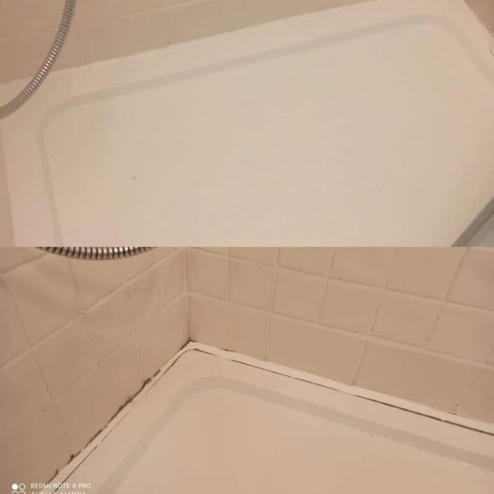

Wanna po wymianie silikonu

Brodzik prysznicowy - przed i po

Narożnik z płytek drewnopodobnych

Usunięta pleśń w narożniku wanny

Wanna przy mozaice - świeży silikon

Silikon w kolorowej łazience

Doszczelniony odpływ liniowy

Wanna z niebieskim akcentem
Zdjęcia poglądowe. Nasze realizacje z okolicy chętnie pokażemy na miejscu przy wycenie.